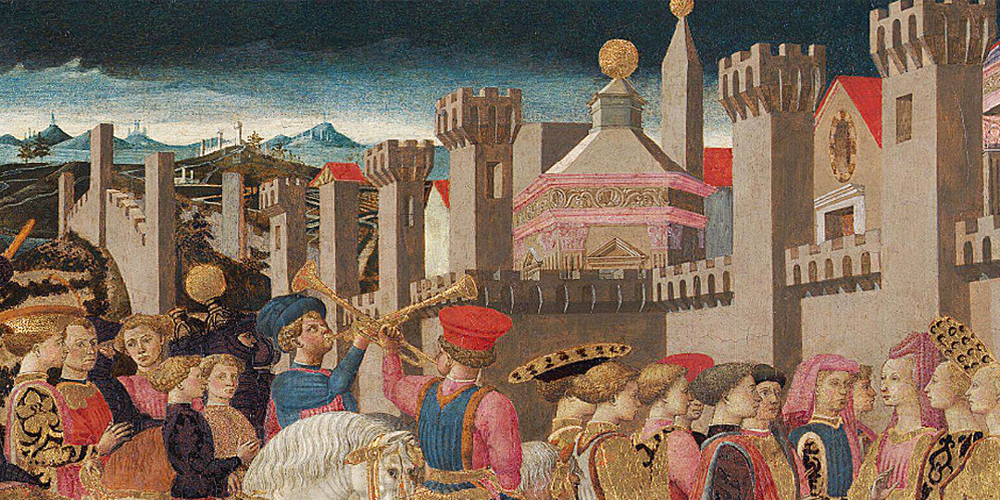
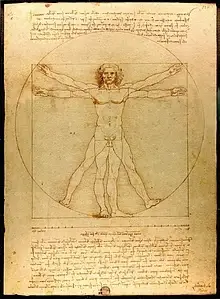
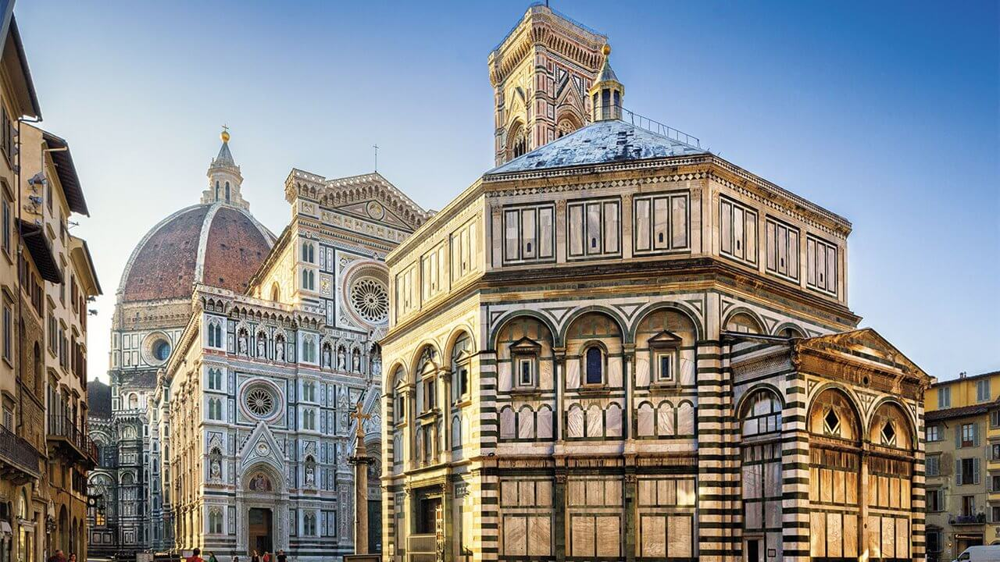

Contexto histórico del Renacimiento
El Renacimiento tuvo lugar entre los siglos XIV y XVI originado en Florencia, Italia, y luego se extendió por el resto de Europa. Este terminó deriva del italiano rinascita propuesto por el artista italiano Giorgio Vasari en su obra de compilaciones biográficas Vidas (1542-1550), en la que expone la visión del Renacimiento. Sin embargo, la primera definición de este movimiento la hizo el historiador francés Jules Michelet, en su obra Histoire de France au XV siècle. La Renaissance (1855).
El Renacimiento surgió en un contexto histórico marcado por el debilitamiento del poder eclesiástico como consecuencia de la de la Reforma protestante y de la caída del Sacro Imperio Romano Germánico, sumado a una crisis económicas que derivaría en el fin del modo de producción feudal. El Renacimiento dio inicio a la Edad Moderna. Fue una época marcada por la renovación del pensamiento que antepuso la razón, las ciencias y las matemáticas a fin de alcanzar nuevos conocimientos. Esto conllevó a importantes cambios culturales, sociales, políticos y científicos.
Entre los más destacados están la necesidad de retomar los valores propuestos por los antiguos filósofos griegos y romanos, el descubrimiento de América, la aparición de banqueros prestamistas y usureros, los intercambios comerciales trasatlánticos, la invención de la imprenta de Johannes Gutenberg y la propagación del conocimiento, entre otros.

El movimiento renacentista se caracterizó por las invenciones y los importantes avances científicos para la época, con importantes figuras como Nicolás Copérnico y su teoría heliocéntrica, Johannes Gutenberg y la invención de la imprenta, como también Galileo Galilei, entre otros. Durante esta etapa, tanto la arquitectura como la ciencia se fusionaron con el arte. De ahí surgieron las primeras recreaciones del cuerpo humano prácticamente perfectas del artista Leonardo da Vinci, quien le sumó principios de la anatomía a sus obras.
Para la época, en Italia había numerosos comerciantes con grandes riquezas, también conocidos como mecenas, quienes comenzaron a invertir en la producción de obras de arte. De allí que en las ciudades de Florencia, Venecia y Roma hubo un gran auge de la producción artística y cultural. Esto hizo de Italia el centro del Renacimiento hasta que este movimiento y su producción artística y cultural se expandieron por el resto de Europa (donde se consolidaban los nuevos estados) y América (donde llegó de manera tardía) gracias a los intercambios comerciales y las conquistas de nuevas tierras.

El Renacimiento fue un movimiento que rompió con los esquemas anteriores y dio paso al pensamiento moderno expuesto, principalmente, a través de la pintura, la arquitectura y la literatura.